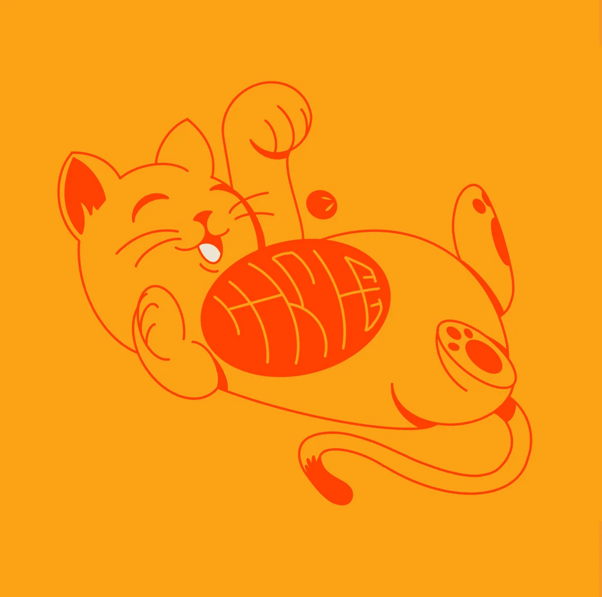
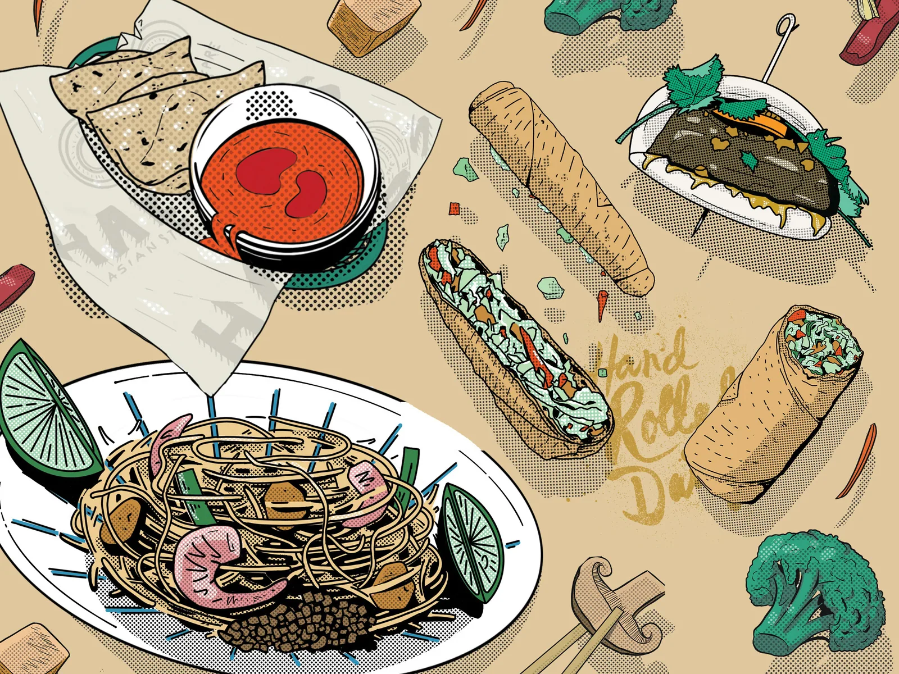
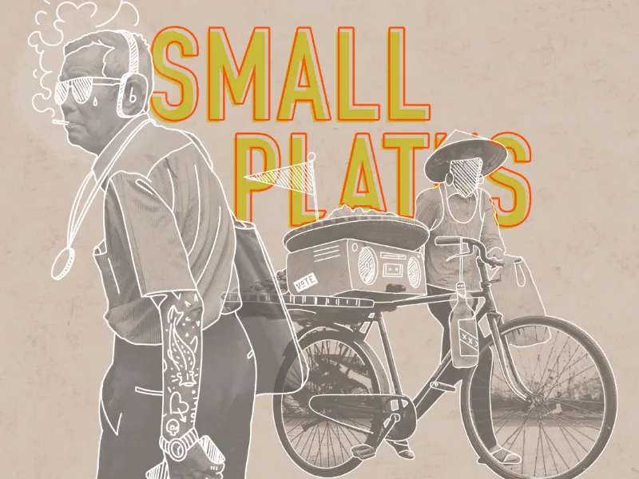
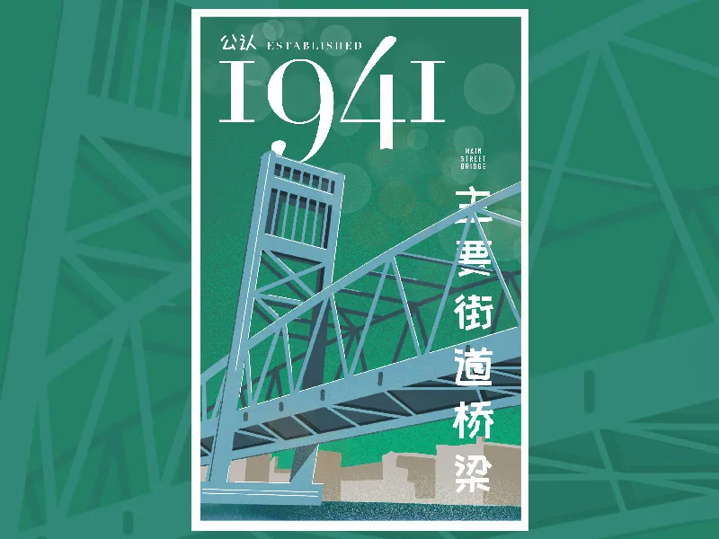
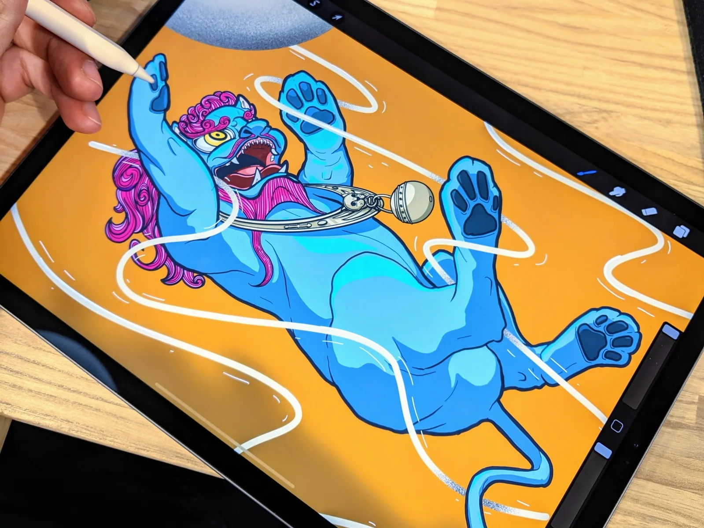

Graphic design / Illustration, lettering, signage and personal projects.
other work

Project Hail Mary patch
Patch

Kabuki mask
Illustration
Mother's Day nesting dolls
Illustration

Lucky cat
Illustration
Nom Com movie night
Illustration

Geisha and koi
Illustration

Streets of Asia
Illustration

Asian food illustrations
Illustration

Street of Asia
Illustration

Main Street Bridge
Illustration

Fu lion with noodles
Illustration

Spicy Smile neon sign
Neon sign

Nice Buns neon
Neon sign

Asian neon masks
Neon sign

I Wanna Wok logo
Logo
Hutch Studio logo
Logo

Ghost Chicken logo
Logo

I Wanna Wok hat
Apparel

Cocktail icons
Illustration

Neon cocktails
Neon sign

Drink Like a Fish neon sign
Neon sign

Nom neon
Neon sign

Lucky cat stamp neon
Neon sign

The Great Wave neon
Neon sign